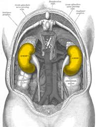

वृक्क

वृक्क अधिकांश जीव जंतुओं के शरीर का आवश्यक अंग हैं। इस लेख में मानव शरीर से संबंधित उल्लेख है। मनुष्य में एक जोड़ी वृक्क होते हैं, जो उदर गुहा के पृष्ठभाग में डायाफ्राम में नीचे व कशेरुकदण्ड के इधर–उधर (दाएँ–बाएँ) स्थित होते हैं। दाहिनी ओर यकृत की उपस्थिति के कारण दाहिना वृक्क बाएँ वृक्क से कुछ आगे स्थित होता है। दोनों वृक्क एक पतली पेरिटोनियम झिल्ली द्वारा उदरगुहा की पृष्ठ दीवार से लगे हुए होते हैं और वसीय ऊतक के अन्दर भी धँसे होते हैं। इन्हें गुर्दे भी कहते हैं।
बाह्य संरचना
मनुष्य के वृक्क गहरे लाल रंग के तथा सेम के बीज जैसी आकृति के होते हैं। प्रत्येक वृक्क लगभग 10-11 सेमी लम्बा, 5 सेमी चौड़ा तथा 2.5-3 सेमी मोटा होता है। प्रत्येक वृक्क का बाहरी तल उत्तल तथा भीतरी तल अवतल होता है। अवतल सतह की ओर गड्ढे जैसी संरचना होती है, जिसे वृक्क नाभि या हाइलस कहते हैं। इसी से होकर रीनल धमनी तथा तन्त्रिका वृक्क में प्रवेश करती है और रीनल शिरा, लसिका वाहिनी तथा मूत्रवाहिनी इसमें से बाहर निकलती हैं। वृक्क के चारों ओर तन्तुमय संयोजी ऊतक का बना पतला वृक्क सम्पुट या रीनल कैप्सूल होता है। प्रत्येक वृक्क में ऊपरी सिरे पर एक अधिवृक्क या एड्रीनल ग्रन्थि नामक अन्तःस्रावी ग्रन्थि टोपी के समान ढँकी होती है।
आन्तरिक संरचना
मनुष्य का प्रत्येक वृक्क या गुर्दा एक दृढ़ तन्तुमय संयोजी ऊतक के बने वृक्क सम्पुट से ढँका रहता है। वृक्क के मध्य में लगभग खोखला तथा कीपाकार भाग होता है, जो संकरा होकर मूत्र नलिका का निर्माण करता है। इस भाग को शीर्षगुहा, श्रोणि या पेल्विस कहते हैं। वृक्क का शेष भाग बाहरी वल्कुट तथा भीतरी मेड्यूला में विभेदित रहता है।
वल्कुट
इसमें वृक्क नलिकाओं या नेफ्रोन्स के मैलपीधी कोष तथा संवलित नलिकाओं के समीपस्थ तथा दूसरा भाग स्थित होते हैं।
मेड्यूला
यह वृक्क का भीतरी हल्के रंग का भाग होता है। इसमें मेड्यूलरी पिरामिड पाए जाते हैं। वृक्क में ऐसे 10-12 पिरामिड दिखाई देते हैं, जो कि अपने शीर्ष भाग से शीर्ष गुहा में खुलते हैं।
नलिका की सरंचना
वृक्क में असंख्य सूक्ष्म नलिकाएँ होती हैं, जो अत्यन्त कुण्डलित तथा लम्बी होती हैं। ये वृक्क की संरचनात्मक तथा क्रियात्मक इकाई होती हैं। प्रत्येक वृक्क नलिका में निम्नलिखित भाग होते हैं:-
मैलपीघियन कोष
- एक प्याले के आकार का बोमैन सम्पुट
- केशिकागुच्छ या ग्लोमेरुलस- यह बोमैन सम्पुट की गुहा में स्थित रिक्त केशिकाओं का जाल होता है।
स्त्रावी नलिका
- समीपस्थ कुण्डलित भाग
- मध्य हेनले लूप
- दूरस्थ कुण्डलित भाग
समाचार
शनिवार,04 दिसम्बर, 2010
भारतीय मूल के शुवो राय ने कृत्रिम वृक्क बनाया
भारतीय मूल के वैज्ञानिक और उनकी टीम ने कृत्रिम वृक्क बनाने का दावा किया है। कैलिफोर्निया यूनिवर्सिटी के भारतीय वैज्ञानिक शुवो राय और उनके साथियों ने इस वृक्क को तैयार किया है। उनका कहना है कि यह कृत्रिम वृक्क न केवल रुधिर से ज़हरीले पदार्थ को उत्सर्जित करता है बल्कि वास्तविक वृक्क की कोशिकाओं का इस्तेमाल करके दूसरे महत्त्वपूर्ण कार्य भी करता है। यह वृक्क रुधिर के दबाब पर नियंत्रण रखता है और विटामिन डी बनाता है। शुवो राय और उनकी टीम चूहों व अन्य प्राणियों पर कृत्रिम वृक्क का परीक्षण कर चुकी है।